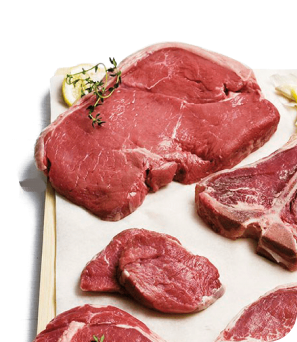
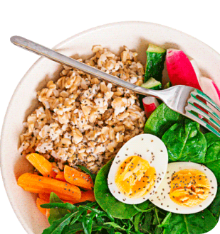

Elige frutas crudas de consistencia firme, evitando las piezas cocidas o los batidos que aportan menor saciedad.
Seleccionar cortes magros de carnes y pescados. Cocinarlos con procedimientos bajos en grasa (al horno, a la plancha, al vapor, papillote, etc.)
Hacer un desayuno completo, planificar con antelación los menús y distribuir las comidas en al menos cinco ingestas para evitar caer en el picoteo.
Vigilar las cantidades e intentar disminuir poco a poco el consumo de sal y alcohol.
Caminar, trotar, correr, nadar, ciclismo al aire libre o estacionario y aeróbicos.
Ejercicios que involucren el propio peso corporal o el uso de pesas con máquinas de gimnasio, mancuernas y ligas.